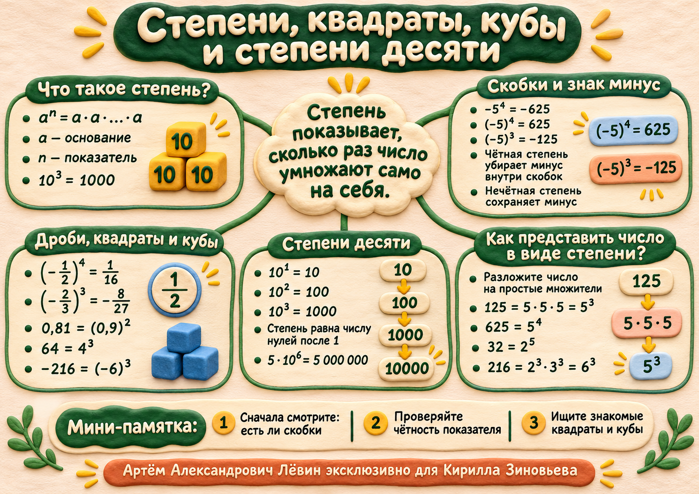

Математика · 7 класс · 25 ноября 2026
Степень с натуральным показателем. Квадраты и кубы чисел
Научитесь вычислять степени, правильно определять знак и представлять числа в виде квадратов, кубов и других степеней.
Показатель задаёт число одинаковых множителей. Основание — число, которое повторяется.
Что такое степень
Степень с натуральным показателем — произведение одинаковых множителей.
В правой части ровно множителей, . При показателе 1 значение равно основанию.
Скобки и чётность показателя
Если отрицательное число целиком находится в основании, чётная степень даёт положительный результат, нечётная — отрицательный. Внешний минус действует после вычисления степени.
Здесь ; — натуральное число.
| Выражение | Что происходит | Значение |
|---|---|---|
| Степень относится только к числу 5. | ||
| Чётный показатель, минус внутри основания. | ||
| Внешний минус сохраняется. | ||
| Нечётный показатель, отрицательное основание. |
Проверьте себя
Каково значение ?
Возведение дробей в степень
Возведите в степень числитель и знаменатель. Знаменатель должен быть ненулевым.
Десятичная дробь
Если после запятой было цифр, при возведении в степень отделите справа цифр в результате возведения числа без запятой в степень. При необходимости допишите нули слева. Знак определяйте отдельно.
Квадраты и кубы
Квадрат — вторая степень, куб — третья. Квадрат действительного числа неотрицателен, куб отрицательного числа отрицателен.
Дополнительно запомните квадраты:
· · · ·Целые числа
Обыкновенные и смешанные дроби
Смешанное число сначала переведите в неправильную дробь; затем представьте числитель и знаменатель степенями с общим показателем.
Десятичные дроби
Степени десяти
У числа записано ровно нулей после единицы, если показатель натуральный.
| Степень | Значение |
|---|---|
Разложение на простые множители
Чтобы представить целое число больше единицы степенью с целым основанием, последовательно делите его на простые числа до единицы, затем группируйте одинаковые множители.
- Разложите число на простые множители.
- Соберите повторяющиеся множители в степени.
- Проверьте, делится ли каждый показатель на нужный показатель степени.
- Если да, разделите показатели и перемножьте полученные степени основания. Если нет, целого основания для данной степени не существует.
- Запишите результат и проверьте возведением в степень.
Разложение по шагам
Выберите один из примеров пособия и проследите каждое деление.
Разложение числа 125
- — делим на простое число 5.
- — делим на простое число 5.
- — делим на простое число 5.
- Собираем одинаковые множители и проверяем результат.
Разложение числа 32
- — делим на простое число 2.
- — делим на простое число 2.
- — делим на простое число 2.
- — делим на простое число 2.
- — делим на простое число 2.
- Собираем одинаковые множители и проверяем результат.
Разложение числа 216
- — делим на простое число 2.
- — делим на простое число 2.
- — делим на простое число 2.
- — делим на простое число 3.
- — делим на простое число 3.
- — делим на простое число 3.
- Собираем одинаковые множители и проверяем результат.
Разложение числа 144
- — делим на простое число 2.
- — делим на простое число 2.
- — делим на простое число 2.
- — делим на простое число 2.
- — делим на простое число 3.
- — делим на простое число 3.
- Собираем одинаковые множители и проверяем результат.
Для квадрата показатели всех простых множителей делятся на 2, для куба — на 3.
Тренировочный блок · 10 заданий
Решите письменно. Определяйте знак и показывайте основные преобразования. В последних двух заданиях используйте разложение на простые множители.
Базовый уровень
Вычислите: .
Показать ответ
Вычислите: .
Показать ответ
Вычислите: .
Показать ответ
Вычислите: .
Показать ответ
Вычислите: .
Показать ответ
Средний уровень
Представьте в виде квадрата положительной конечной десятичной дроби: .
Показать ответ
Представьте в виде квадрата положительной обыкновенной дроби: .
Показать ответ
Представьте в виде куба десятичной дроби: .
Показать ответ
Повышенный уровень
Представьте в виде степени числа 3. Используйте разложение на простые множители: .
Показать ответ
Представьте в виде куба целого числа. Используйте разложение на простые множители: .
Показать ответ
Итоговая памятка
Отметьте умения, которые можете применить самостоятельно.

